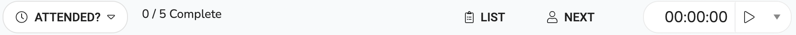

Overview
The clinic Worksheet controls the days clinic. This is the space the that the clinician uses to run their clinic from. The days appointments are listed and when clicked upon opens up the details and actions for the clinic.
It is split into two sections:
- The clinic appointment list, which displays the list of appointments and their status
- The clinic appointment details, which displays the details of the appointment and allows note taking, document uploading and several other features. a case, edit details and various other options.
Appointment List
This is where you see your clients for the clinic you are running that day.

This consists of three main areas:
- The top section is for selecting the venue and date but really should only be needed when viewing clinics in the future. If you are selecting the clinic date then the dates with clinics set have a small blue dot under them.
- The middle section has a header which shows the progress through the clients and below that is the list of clients that are to attend the clinic. The icon next to each client signifies the status of the appointment and the appointment status can be set by clicking on the icon (see appointment details). The icons definitions are below (hovering the mouse pointer over the icon will reveal the status too):
- The bottom section is an action bar. The action creates the clinic sheet as a pdf.
Appointment Statuses
| Icon | Label | Description |
|---|---|---|
| Awaiting | This is the appointments initial status | |
| Arrived | This is an optional status and only applies if you are using a front desk to register that someone has arrived at the premises. | |
| Did Not Attend/Cancelled | The client did not attend or the appointment was cancelled at the last minute. | |
| Attended | The client attended the appointment. |
Appointment Page
This is the area is to support the clinician during the appointment. It contains a header section and a tabs section.
Header
This area has basic information and available actions.
information is:
- On the top of the section is the progress showing how many you have seen or did not attend over how many are in the clinic (e.g. 1/3 Complete).
- Then on the row down is the clients name on the left and the appointment slot is on the left (e.g. 09:15 - 10:00)
The actions are:
| Icon | Label | Description |
|---|---|---|
| Set Status | This is the most important action on this screen. When set it triggers the systems to perform additional activities that help admin. The statuses are: Attended, Arrived, Did not attend, Cancelled. Next to this is the progress text. | |
| List | Displays the clinic day appointments so you can select another client. | |
| Next | Opens the next clients appointment. | |
| Timer | This is a timer to show how long you have been in the session. |
The Tabs
This area has several tabs which cover different areas. Below is a description of each area:
| Icon | Label | Description |
|---|---|---|
| Overview | Gives a brief set of information about the client, the case and the incident. | |
| Comments | comments (These are for the administration, not clinical notes). | |
| Process Notes | This is where you would register the clinical notes | |
| Documents | You can upload case documents here. (e.g. handwritten notes scanned in session) | |
| Timeline | Shows the client's timeline (see Case timeline) | |
| Client | This is the client details page. | |
| Charges | Shows the charges related to this appointment |
Activating the task templates
It is important to set status it is a key component to supporting the admin staff. When the clinician sets appointment status to 'Attended' then the user will be asked if they want to activate the associated task template. If the user responds in the affirmative then they will be activated.
If the clinician then changes their mind and changes the status back then the created tasks will beremoved.
If the clinician set the attendance status to 'Did not Attend' (DNA) then then DNA task template will initiated. The default template for the DNA task template is set in general settings.
How to use
Clinic How to..
How do I view my clinic day?
On Opening the clinic worksheet if there is a clinic set for today then is should automatically appear. The date is set to today by default and the relevant clinic for today is preselected. So you should see a list of clients below the date selector and the venue selector. If more than one clinic is set then use the venue seletor to switch between them.
If however, you want to look at a clinic in the future or past then:
- Either type in the date or click the date icon to show a calendar to select a date.
- [optional] If there is a clinic on that day it should automatically set the venue however you select a venue by clicking on the venue and selecting from the list.
How do I start (or view) a session?
Click on the client's name. The list will disappear and the appointment details will appear. You can easily
get
back to it by click the  list button.
list button.
If moving to the next client in the clinic click the  next
button.
next
button.
How do I complete a session?
From the open session:
- [Required] Click to set the status of the appointment.In normal circumstances, you would either
set
it to
Attended or Did Not
attend.
This is an important first step to the appointment and triggers other functions in the system.
- When you have finished your session you can scan your notes (if hand written) and upload to inClinic via the documents tab remembering to set a type 'Annotated Template'. See Documents Section for further information.
- To select the next client either click for the next due in the clinic or click to bring up the appointment list and choose the required client.
How do I time the appointment?
When you are in the appointment click on the button. This will start a timer that will count up in minutes. The timer will show with in the button. If you want to pause it click on it again and if want to restart it click on it again.